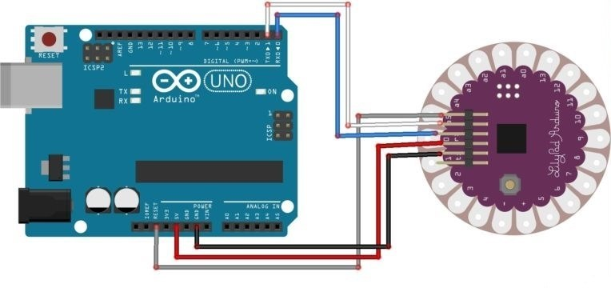
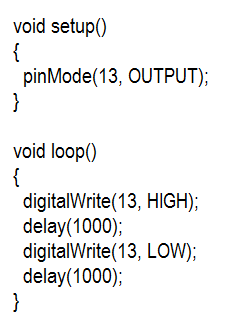

PROJETO COM ARDUINO LILYPAD
Blink
Componentes necessário:
Blink
Componentes necessário:
Ensinaremos a você como passar a programação da IDE pro LilyPad por meio do Arduino Uno, sem a necessidade de se utilizar o conversor FTDI. O código que passaremos ao LilyPad será o nosso famoso e querido blink. Primeiramente, precisamos preparar o arduino UNO para que ele seja o nosso “adaptador FTDI”. O primeiro passo é remover o ATmega328p do seu arduino UNO.
Após isso, monte o circuito representado abaixo.

Hora de Programar!!!
O código consiste em deixar o LED presente na placa acesso por 1 segundo, e apagado por mais 1 segundo.
